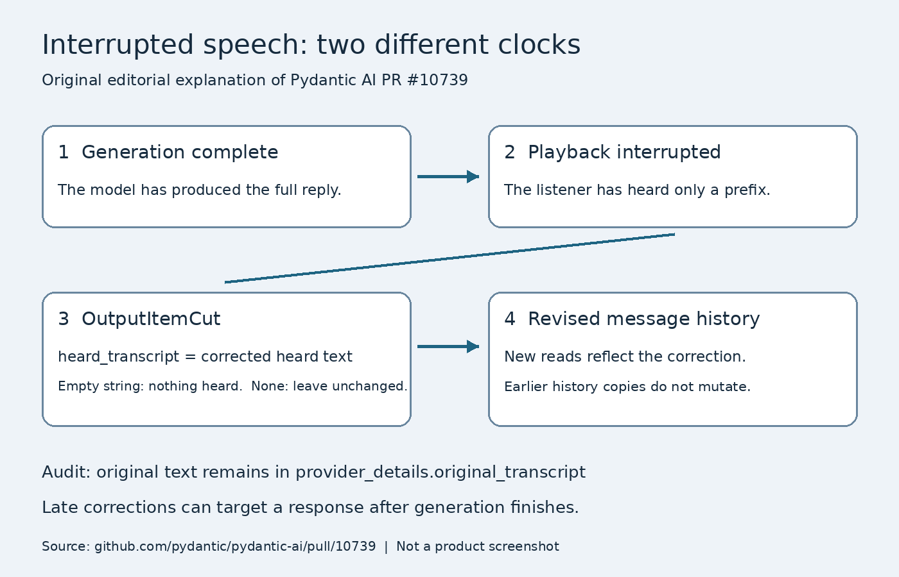

01 · 任务与证据
语音代理有两个不同的进度：模型生成到了哪里，以及扬声器播放到了哪里。用户在一句解释中途插话时，模型可能早已生成整段内容；若历史仍保存完整转录，下一回合就会假定用户听过后半段。2.59.0的发布说明与相关实现把这一差异落实为可修订状态，而不是让应用删除整个回合。维护者提到过一次保留约二十六秒未播放文字的探查，这只说明该具体问题的量级，不能当作普遍故障率或本刊复测。产品上的价值在于让“刚才说到哪里”有明确依据，从而支持自然插话与继续解释。
Pydantic AI 2.59.0 · 开源软件 · SDK更新
同一项目的完整分析。研究截止为14:00:02Z；来源核验与图片获取在后，不改变事件日期。

语音代理有两个不同的进度：模型生成到了哪里，以及扬声器播放到了哪里。用户在一句解释中途插话时，模型可能早已生成整段内容；若历史仍保存完整转录，下一回合就会假定用户听过后半段。2.59.0的发布说明与相关实现把这一差异落实为可修订状态，而不是让应用删除整个回合。维护者提到过一次保留约二十六秒未播放文字的探查，这只说明该具体问题的量级，不能当作普遍故障率或本刊复测。产品上的价值在于让“刚才说到哪里”有明确依据，从而支持自然插话与继续解释。
接口细节直接决定恢复是否正确。OutputItemCut的实现讨论区分heard_transcript为空字符串与为None：前者表示没有任何内容被听到，后者表示维持当前转录不变。原始文本保留在provider_details.original_transcript，迟到的修正可以关联响应标识；即使生成已结束，只要播放尚未完成，修正仍可能必要。新的all_messages与new_messages读取会反映更新，但先前取出的历史副本不会被追溯修改。开发者若把旧副本用于日志、下一轮提示或业务判断，必须主动处理同步关系，否则SDK内部修好了，应用仍可能沿用错误的“已传达”事实。
这也改变了测试与产品控制点。应在句首、句中和生成结束后的播放阶段分别打断，检查下一回合是否只依赖实际听到的内容，同时保留可解释的原始记录；清空整段历史虽简单，却丢失已经成功传达的信息。同版新增的Daytona集成则处理另一种持续状态：按需创建工作区，并通过历史重新连接，生命周期由应用显式管理，不会自动删除。
工作区缺失、凭据缺失或服务不可用都应成为可识别错误，而非偷偷换一个空环境继续。该路径限asyncio，外部服务也不因SDK的许可而免费。两组变化的共同判断标准是：中断后恢复到哪一个真实状态，是否能让用户和开发者都解释清楚；如果下一轮仍引用未播放的话，或工作区重连悄悄丢失任务产物，采用收益就未成立。